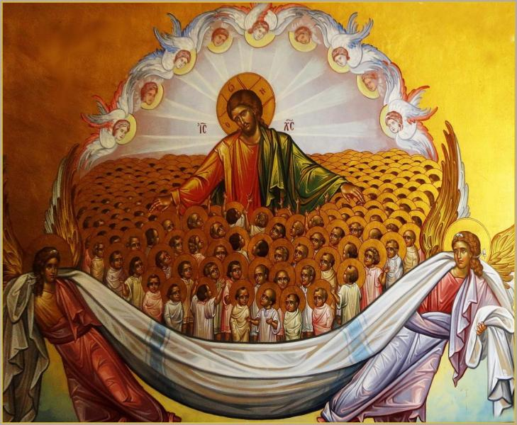

27 12 2015 (502 дня 22 часа назад)
Очень трудно искупить грех за душу убиенного во чреве дитя. Церковь по древним канонам за аборт отлучала от причастия на 10 лет, наравне с убийцами. Конечно, сегодня это правило не применяется, но понимать, что аборт относится к одному из самых тяжких грехов, нужно. Но как в следствии бесследно ничто не проходит- обычно жизнь таких людей, погубивших младенцев в утробе, омрачается различными скорбями – это одиночество, бездетность, семейные проблемы, трудности с воспитанием детей, иногда их потеря, расстройство душевного и телесного здоровья. Все скорби могут рассматриваться как епитимья, а через терпеливое перенесение этих скорбей, соединенное с покаянием и сокрушением сердца, приходит прощение. Но есть способ облегчить свою совесть, и не допустить дальнейшего детоубийства. В послании св. апостола Иакова говорится: «обративший грешника от ложного пути его спасет душу от смерти и покроет множество грехов» (Иак.5:20). Принятие такого закона в Абхазии, спасет много ни в чем неповинных младенцев и не нанесет вреда душам их матерей, которые будут нести эту травму до конца своих дней. Сейчас пока еще не поздно, покаяться за прошлые наши грехи, и не допустить в будущем эти ошибки, которые как пороком лягут на плечи всего народа.
Слава Богу, что вопрос об этом был поднят на правительственном уровне и отдельное спасибо депутатам в лице Саида Харазия, которые продвигают это Богоугодное дело, а Господь, видя покаяние и плод, достойный покаяния, воздаст во спасение всем нам, и силен помиловать наши заблудшие души.
Подробности: ruskline.ru/news_rl/
Подробности на Youtube: youtube.com/watch?v=ofyYXbxayQQ
Слава Богу, что вопрос об этом был поднят на правительственном уровне и отдельное спасибо депутатам в лице Саида Харазия, которые продвигают это Богоугодное дело, а Господь, видя покаяние и плод, достойный покаяния, воздаст во спасение всем нам, и силен помиловать наши заблудшие души.

Подробности: ruskline.ru/news_rl/
Подробности на Youtube: youtube.com/watch?v=ofyYXbxayQQ